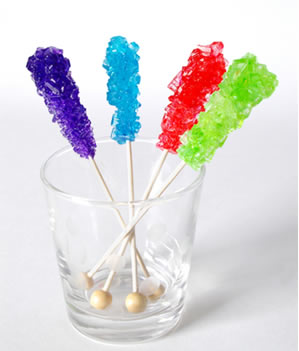

- 1. Coloque 1 xícara de água na panela e leve ao fogo;
- 2. Vá adicionando açúcar até que você não consiga dissolver mais.
- 3. Continue mexendo a mistura no fogo até levantar fervura para que forme uma espécie de calda;
- 4. Retire do fogo e adicione o corante e o flavorizante se desejar;